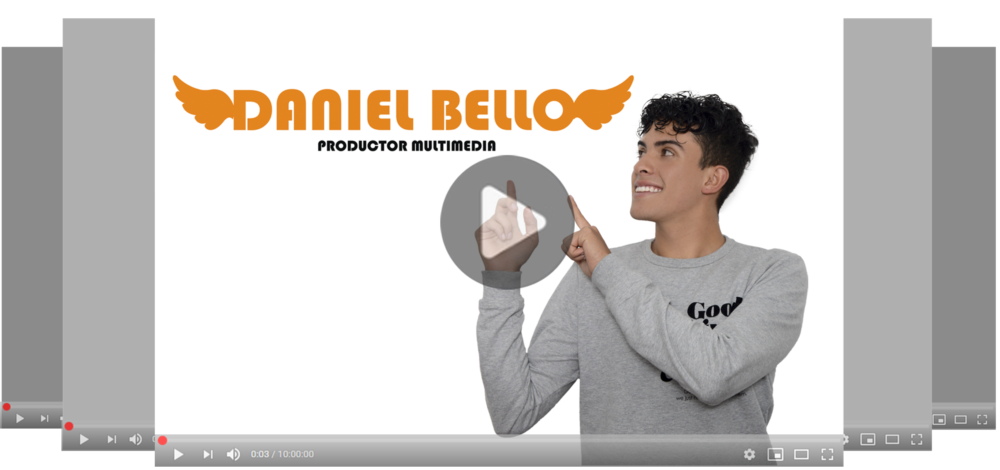
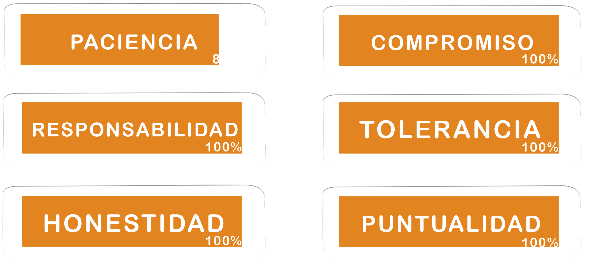

"El fracaso derrota a los perdedores
e inspira a los ganadores"
Robert T. Kiyosaki,
Empresario estadounidense

Me llamo Daniel Bello Perdomo, nací el
26 de julio de 2002 en Bogotá D.C.
y soy el menor de mis hermanos.
Termine mis estudios primarios
y secundarios con buen rendimiento
academico, soy técnico en Impresión
Serigrafíca, y actualmente estoy cursando
un técnologo en Producción Multimedia.
HABILIDADES BLANDAS
HABILIDADES TÉCNICAS